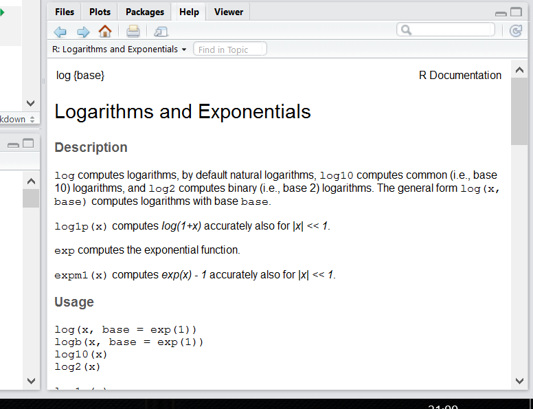
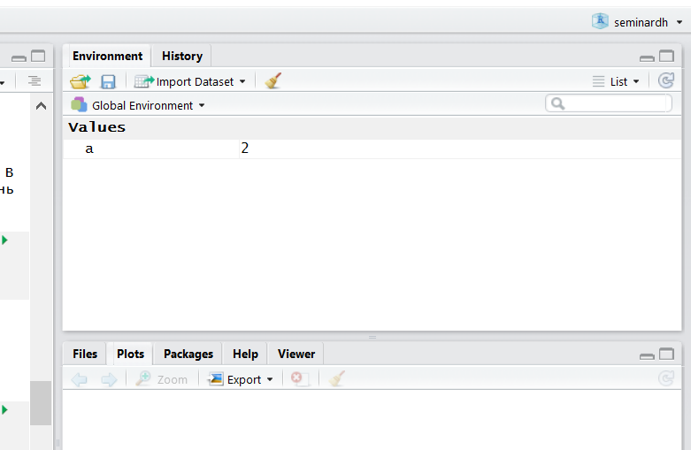

- 1 О курсе
- 2 Введение в R
- 3
tidyverse: Загрузка и трансформация данных - 4 Визуализация данных
- 5 Условия и работа со списками
- 6 Представление данных: rmarkdown, github, shiny
- 7 Работа со строками
- 8 Работа с текстами: tidytext, udpipe
- 9 Сбор данных из интернета: rvest
- 10 Нестандартные данные: время, OCR, карты
- 11 Задания
- 12 Решения_заданий
- Ссылки на литературу
2.5 Введение в R
2.5.1 R как калькулятор
Ой-ей, консоль, скрипт че-то все непонятно.
Давайте начнем с самого простого и попробуем использовать R как простой калькулятор. +, -, *, /, ^ (степень), () и т.д.
Просто запускайте в консоли пока не надоест:
## [1] 42## [1] 1## [1] 30## [1] 11## [1] 8## [1] 8Ничего сложного, верно? Вводим выражение и получаем результат. Порядок выполнения арифметических операций как в математике, так что не забывайте про скобочки.
Если Вы не уверены в том, какие операции имеют приоритет, то используйте скобочки, чтобы точно обозначить, в каком порядке нужно производить операции.

2.5.2 Функции
Давайте теперь извлечем корень из какого-нибудь числа. В принципе, тем, кто помнит школьный курс математики, возведения в степень вполне достаточно:
## [1] 4Ну а если нет, то можете воспользоваться специальной функцией: это обычно какие-то буквенные символы с круглыми скобками сразу после названия функции. Мы подаем на вход (внутрь скобочек) какие-то данные, внутри этих функций происходят какие-то вычисления, которые выдает в ответ какие-то другие данные (или же функция записывает файл, рисует график и т.д.).
Вот, например, функция для корня:
## [1] 4R — case-sensitive язык, т.е. регистр важен.
SQRT(16)не будет работать.
А вот так выглядит функция логарифма:
## [1] 2.079442Так, вроде бы все нормально, но… Если Вы еще что-то помните из школьной математики, то должны понимать, что что-то здесь не так.
Здесь не хватает основания логарифма!
Логарифм — показатель степени, в которую надо возвести число, называемое основанием, чтобы получить данное число.
То есть у логарифма 8 по основанию 2 будет значение 3:
\(\log_2 8 = 3\)
То есть если возвести 2 в степень 3 у нас будет 8:
\(2^3 = 8\)
Только наша функция считает все как-то не так.
Чтобы понять, что происходит, нам нужно залезть в хэлп этой функции:
Справа внизу в RStudio появится вот такое окно:

Действительно, у этой функции есть еще аргумент base =. По дефолту он равен числу Эйлера (2.7182818…), т.е. функция считает натуральный логарифм.
В большинстве функций R есть какой-то основной инпут — данные в том или ином формате, а есть и дополнительные параметры, которые можно прописывать вручную, если параметры по умолчанию нас не устраивают.
## [1] 3…или просто (если Вы уверены в порядке аргументов):
## [1] 3Более того, Вы можете использовать оутпут одних функций как инпут для других:
## [1] 3Если эксплицитно писать имена аргументов, то их порядок в функции не важен:
## [1] 3А еще можно недописывать имена аргументов, если они не совпадают с другими:
## [1] 3Мы еще много раз будем возвращаться к функциям. Вообще, функции — это одна из важнейших штук в R (примерно так же как и в Python). Мы будем создавать свои функции, использовать функции как инпут для функций и многое-многое другое. В R очень крутые возможности работы с функциями. Поэтому подружитесь с функциями, они клевые.
Арифметические знаки, которые мы использовали: +,-,/,^ и т.д. называются операторами и на самом деле тоже являются функциями:
## [1] 72.5.3 Переменные
Важная штука в программировании на практически любом языке — возможность сохранять значения в переменных. В R это обычно делается с помощью вот этих символов: <- (но можно использовать и обычное =, хотя это не очень принято). Для этого есть удобное сочетание клавиш: нажмите одновременно Alt - (или option - на Маке).
## [1] 2После присвоения переменная появляется во вкладке Environment в RStudio:

Можно использовать переменные в функциях и просто вычислениях:
## [1] 8## [1] 3Вы можете сравнивать разные переменные:
## [1] FALSEЗаметьте, что сравнивая две переменные мы используем два знака равно ==, а не один =. Иначе это будет означать присвоение.
## [1] 8Теперь Вы сможете понять комикс про восстание роботов на следующей странице (пусть он и совсем про другой язык программирования)

Этот комикс объясняет, как важно не путать присваивание и сравнение (хотя я иногда путаю до сих пор =( ).
Иногда нам нужно проверить на неравенство:
## [1] FALSE## [1] TRUEВосклицательный язык в программировании вообще и в R в частности стандартно означает отрицание.
Еще мы можем сравнивать на больше/меньше:
## [1] FALSE## [1] TRUE## [1] FALSE## [1] TRUE